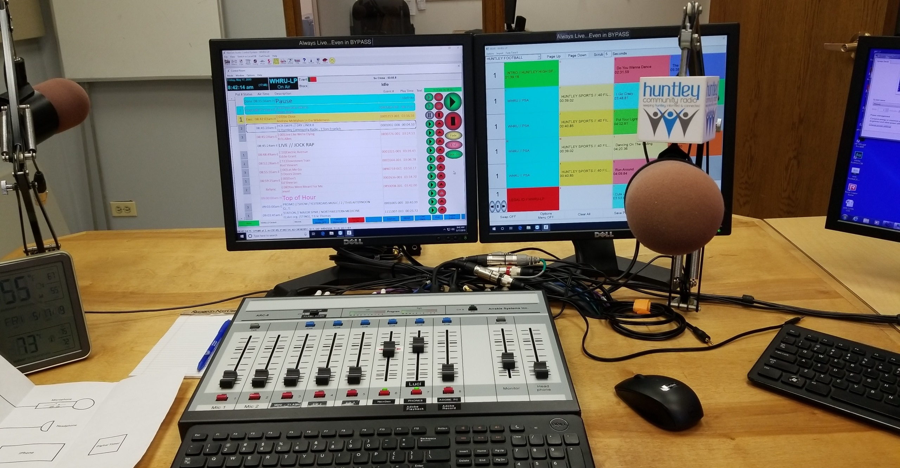

Jacks Interests
Radio
I am currently interning/voulntearing at the Huntley Community Radio Station where I record and produce shows.
I have also been on the radio doing interviews and co-hosting a few talk shows at all of the local radio stations in our area.
I've learned a lot of things at the station including learning how to organize and finish projects.